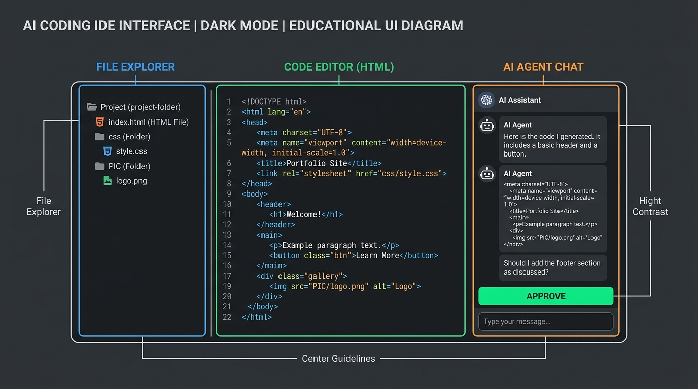
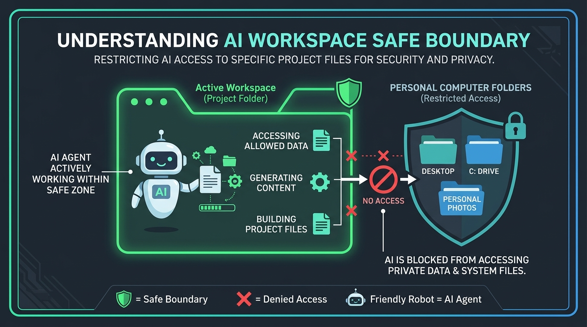
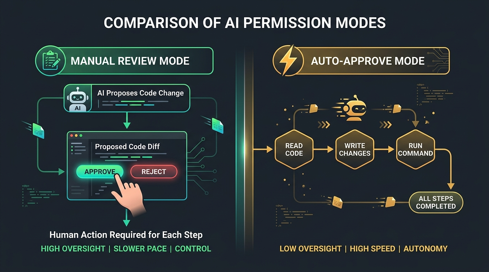

下載及安裝 Antigravity
歡迎來到第一課！本章將帶領完全沒有接觸過 Antigravity 的同學完成軟體下載、安裝、設定工作資料夾，並進行第一次對話。
1-1 什麼是 Antigravity？
Antigravity 是一款以「Agentic AI（代理型人工智慧）」為核心的新一代智能開發助理與 IDE。傳統的程式碼編輯器需要你自己打每一行程式碼，而 Antigravity 就像配備了一個經驗豐富、24 小時在線的資深工程師伴侶（Pair Programmer）。
你不需要預先精通 HTML、CSS 或 JavaScript，只要透過「日常說話的自然語言（Prompt）」，Antigravity 就能替你直接撰寫程式碼、修改錯誤、建立檔案，甚至執行系統指令！
1-2 軟體下載與安裝流程
請依照你目前使用的作業系統，依照以下步驟安裝：
取得官方安裝程式
前往官方發布網站或下載連結，依據你的作業系統下載安裝檔：
- Windows 用戶： 下載
.exe安裝檔案（或透過指令快速安裝）。 - macOS 用戶： 下載
.dmg檔案（支援 Apple Silicon 與 Intel 晶片）。
執行安裝與完成登入
按兩下安裝檔案並依循畫面引導（按「下一步」直至完成）。首次開啟後，點選「Sign in / 登入」，綁定你的 Google / 專屬開發者帳號。

① 左側檔案總管（File Explorer）：查看工作區裡有哪些檔案 ｜ ② 中間編輯預覽區（Code Editor）：檢視 AI 寫好的程式碼 ｜ ③ 右側 AI 對話框（Agent Chat）：我們下達指令的地方
1-3 工作環境（Workspace）深度解析：單資料夾 vs 多資料夾運作
Antigravity 是一個**「具備環境感知能力的代理（Agent）」**，它必須明確知道它在哪裡操作檔案。這就是為什麼「工作區（Workspace）」的概念至關重要！
💡 工作環境的核心運作邏輯
當你在 Antigravity 中開啟一個資料夾時，AI 會將該資料夾設為「作用中工作區（Active Workspace）」與「指令執行根目錄（Working Directory）」。AI 的所有檔案建立、搜尋、修改與終端機指令，都預設在這個安全邊界之內進行，避免影響到電腦的其他私人資料。

開啟獨立的專案資料夾後，AI 只會在發光的安全邊界內建立與修改網頁；外圍的電腦桌面、C 槽系統與私人照片皆受到隔離保護。
兩種工作區使用模式：
適合場景： 獨立的小型專案、單一網站或新手練習。
設定方式： 點選頂部選單 File ➔ Open Folder（開啟資料夾），選擇一個乾淨的空目錄（如 C:\MyProjects\web-demo）。
優點： 結構單純、AI 不會被外部檔案干擾，所有的相對路徑（如 PIC/image.jpg）都能直接對應。
適合場景： 前後端分離專案（如 frontend/ 與 backend/）或需要引用另一個共用素材庫時。
設定方式： 先開啟主資料夾，再點選 File ➔ Add Folder to Workspace...（新增資料夾至工作區）。
注意事項： AI 會同時讀取多個根目錄。向 AI 提問時，建議特別指明目標目錄（例如：「請在 frontend 資料夾中建立網頁」）。
1-4 權限管理與自動同意（Auto-Approval）：我們到底授權了什麼？
傳統 AI（如一般聊天機器人）只能「回答文字」，但 Antigravity 具備「行動力（Agency）」 —— 它可以真正幫你寫入檔案、刪除檔案、執行 PowerShell/Bash 終端機指令。因此，理解「我們授予了它什麼權限」是每位學員最重要的安全第一課！
🛡️ Antigravity 的四大核心能力權限
- 讀取檔案（Read Tools）： 檢視專案目錄與讀取檔案內容，用來理解現有專案架構。
- 寫入與修改檔案（Write & Edit Tools）： 建立新檔案、替換或覆蓋程式碼區塊。
- 執行系統指令（Terminal / Run Command）： 在終端機執行指令（例如
git status、npm install、gh repo create等）。 - 網路與外部整合（Web Search / API）： 查詢最新官方文件、呼叫外掛外連服務等。
什麼是「自動同意（Auto-Approval / Yolo Mode）」？
當 Antigravity 打算修改檔案或在你的電腦終端機跑一段命令時，系統會採取以下兩種防護行為之一：

左方會在每次執行指令前跳出
Approve / Reject 確認視窗；右方則授權 AI 連續自動完成建檔、改碼與部署，大幅提升開發效率。
每次 AI 準備執行終端機命令或修改關鍵檔案時，視窗會跳出「審查確認按鈕（Approve / Reject）」，讓你看清楚即將執行的指令與程式碼差異（Diff），你點擊「Approve」後它才會動手。
適合： 初學者、在重要生產環境或包含敏感機密的電腦上。
在設定中啟用自動同意後，AI 會自主連續執行讀取、修復、寫檔與指令跑完一整串工作流，不需要你每一動都手動按「同意」，開發速度極快。
適合： 獨立練習資料夾、快速原型開發（如本課程製作產品網頁與部署）。
- 絕對不要將個人的整顆硬碟根目錄（如
C:\）或「桌面」直接設為 Workspace！請永遠建立一個專門放這個專案的獨立新資料夾。 - 不要在專案資料夾裡放私人密碼檔： 後續第 4 章我們會將整個資料夾發布到公開的網路上（GitHub）。因此請勿將私人帳密筆記、身分證照片放在這個資料夾內。
- 💡 初學者小百科：什麼是
.gitignore（忽略清單）？
如果未來你的專案裡真的有一些「只能在自己電腦用、絕對不能傳上網」的私密金鑰檔案（例如寫著密碼的.env檔），你可以直接對 Antigravity 說：
「請幫我建立一份 .gitignore 忽略清單，把我的私密檔案排除，不要上傳到 GitHub！」
這張.gitignore就像是貼在門口的「請勿搬運清單」，AI 在幫你上傳網站時就會自動跳過這些機密檔案，只讓它們安全留在你的電腦裡！ - 在執行未知系統指令前，如果不確定指令意圖，請隨時在對話中詢問 Antigravity：「這條指令的作用是什麼？會不會影響我的系統？」
1-5 第一次與 AI 助手對話實戰
理解了工作區與權限後，現在我們在乾淨的練習資料夾中，在右側的 AI 對話框中輸入下面這段話：
發送後，你會看到 Antigravity 會自動呼叫工具建立檔案，並把完整的 HTML 程式碼寫入你的資料夾中。接著只要用瀏覽器點開 hello.html，你就能看到生動的網頁畫面！